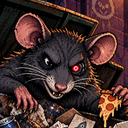

BINRATHE GETS THE SCRAPS. YOU GET THE RECEIPTS.
Thesis: strongest long-term simplicity.
Risk: can feel too neutral without Rat Zero nearby.
Rule: no decorative cuts or fake-industrial letter edits.
64px navigation context